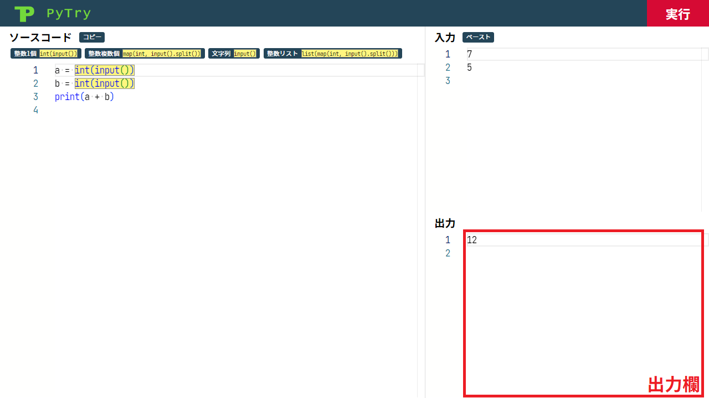
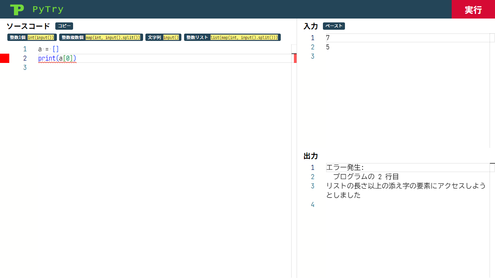

PyTry の使い方
PyTry を
起動
します
ソースコード記入欄
にソースコードを書きます
標準入力を読み込むためのコード
はボタンを押して挿入できます
エディタでこのコードのハイライトが消えてしまった場合，コードの一部 (末尾の括弧など) を誤って消してしまった可能性があります
ソースコードを書き終わったら，
入力欄
に入力を書きます
入力欄では
ペーストボタン
も活用できます
ソースコードと入力の準備ができたら，
実行ボタン
を押します
実行ボタンを押したタイミングでオートフォーマットが走ります

出力欄
にプログラムの実行結果が表示されます
コピーボタン
を用いて完成したソースコードを他のシステムで提出できます
ソースコードに表示された
オレンジの波線は文法ミス
を示します
マウスホバーでエラーメッセージ
を確認できます
PyTry は少しせっかちななので，ソースコードを書いている最中にエラーが指摘されることもあります

実行時エラーは赤色の波線
で示されます